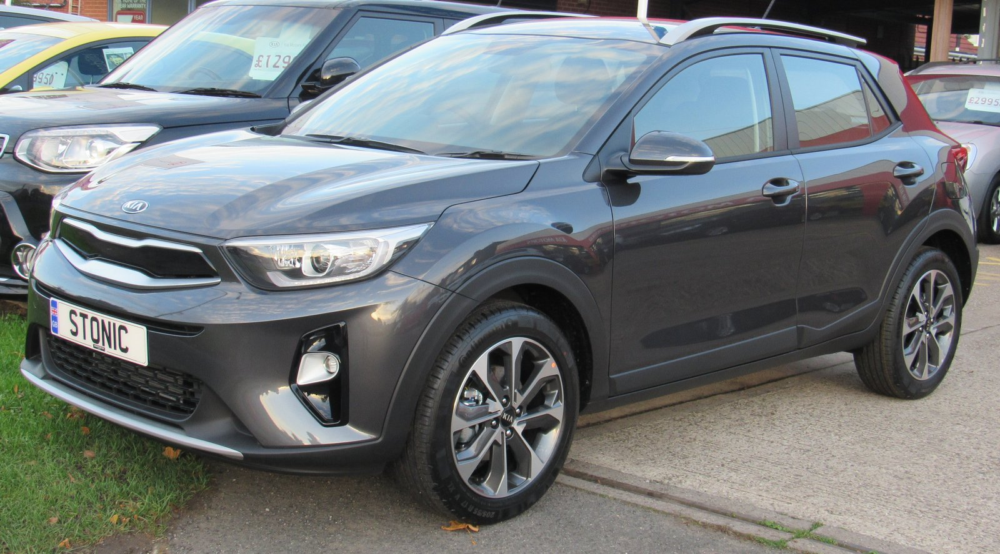
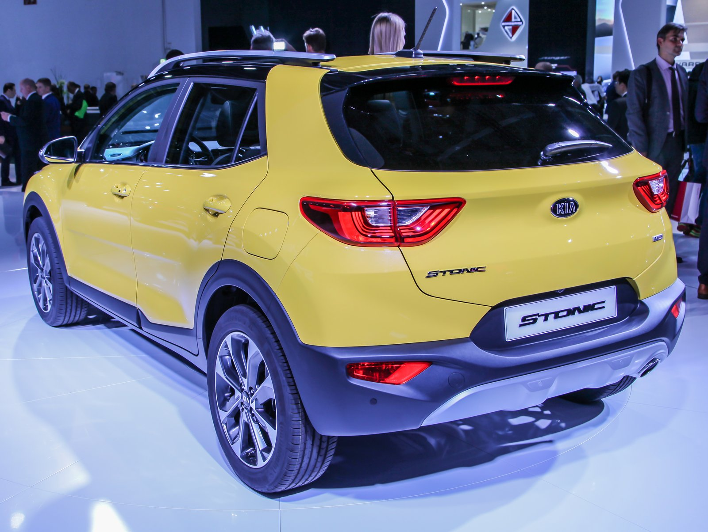

▲ 2020년 국내 판매가 중단된 기아 스토닉 디젤. 중고차 시장에서는 여전히 실속 있는 선택지로 거론된다 ⓒ Vauxford, Wikimedia Commons (CC BY-SA 4.0)
최근 몇 년 새 국산 신차 시장에서 디젤 엔진은 빠르게 자취를 감추고 있습니다. 2026년형 카니발은 8월 18일 공식 출시와 함께 오랜 주력 파워트레인이었던 2.2 디젤을 완전히 걷어내고 3.5 가솔린과 1.6 터보 하이브리드로만 라인업을 꾸렸고, 현대차 스타리아도 2.2 디젤 단종을 앞두고 있습니다. 22년간 디젤을 유지해온 투싼 역시 하이브리드·PHEV 전용 구성으로 전환됐고, 쏘렌토도 다음 세대부터는 디젤이 빠질 예정입니다.
실제로 지난해 신규 등록된 국내 승용차 164만 6,000대 중 디젤 모델은 12만 9,000대로 전체의 7.8%에 불과했습니다. 가솔린이 41.6%, 하이브리드가 31.1%를 차지한 것과 비교하면 디젤의 입지가 얼마나 좁아졌는지 알 수 있습니다. 이런 흐름 속에서, 이미 단종된 기아 스토닉 디젤이 중고차 시장에서 오히려 재조명받고 있습니다.
1. 신차 시장에서 디젤이 사라지는 이유
디젤 엔진이 국산 신차 라인업에서 밀려나는 배경에는 강화된 환경 규제와 하이브리드 기술의 발전이 함께 자리하고 있습니다. 카니발의 경우 1.6 터보 하이브리드 복합연비가 약 14.0km/L로, 기존 2.2 디젤(13.1km/L)보다 오히려 우수해지면서 디젤을 고수할 이유가 사라졌습니다. 도심 연비 격차는 3km/L에 달할 정도입니다.
여기에 소비자 인식 변화도 한몫합니다. 한때 디젤은 '경제적인 연비'의 대명사였지만, 요소수 이슈와 미세먼지 규제, 하이브리드·전기차의 대중화가 맞물리면서 신차 구매 시 디젤을 우선순위에 두는 소비자가 크게 줄었습니다. 그 결과 소형 SUV 세그먼트에서도 디젤 옵션 자체를 찾기 어려운 상황이 됐습니다.
2. 스토닉 디젤, 스펙과 연비로 보는 실속

▲ 스토닉 후면부와 'STONIC' 배지. 소형 SUV 특유의 컴팩트한 체격이 특징이다 ⓒ Alexander Migl, Wikimedia Commons (CC BY-SA 4.0)
스토닉 디젤은 1.6 E-VGT 디젤 엔진에 7단 DCT를 맞물려 최고출력 110마력, 최대토크 30.6kg·m를 발휘합니다. 공인 복합연비는 16.7~17km/L(17인치 휠 기준)로, 도심 15.8~16.1km/L, 고속도로 17.8~18.1km/L를 기록합니다.
여러 매체의 시승 후기를 보면 실주행 연비는 공인 수치를 웃도는 경우가 많습니다. 80km/h 안팎의 고속화도로 정속 주행에서는 20.7km/L, 크루즈 컨트롤을 활용한 고속도로 주행에서는 최대 22.0km/L까지 기록됐고, 누적 연비 21.6km/L를 남긴 사례도 있습니다. 연비 운전에 신경 쓰면 24km/L를 넘어서는 경우도 보고됩니다. 디젤 특유의 저·중속 토크 덕분에 시내 주행에서도 경쾌한 가속감을 보여준다는 평가가 많습니다.
3. 신차 대비 반의반 값 — 중고 시세로 보는 가격 메리트
스토닉 디젤은 2017년 출시 당시 프레스티지 트림 기준 2,265만 원, 드라이브 와이즈(85만 원)와 선루프(45만 원) 등 옵션을 더하면 약 2,395만 원에 판매됐습니다. 후측방 충돌 경고와 후방 교차 충돌 경고를 기본 탑재했고, 7인치 스마트 내비게이션과 후방카메라, 풀오토 에어컨도 포함됐습니다.
현재 중고 시세는 주행거리에 따라 크게 갈립니다. 6만 5,000km대 매물은 1,290만 원, 10만 3,000km대는 910만 원, 15만km를 넘는 매물은 760만 원 선까지 내려갑니다. 10만km 주행 차량도 1,000만 원 미만에 구매할 수 있는 경우가 많아, 신차 가격의 반의반 수준으로 소형 SUV를 마련할 수 있는 셈입니다. 전장 4,140mm, 전폭 1,760mm, 휠베이스 2,580mm에 트렁크 용량 352리터로, 1~2인 가구의 일상 주행과 짐 적재에 부족함이 없는 체격입니다.
4. 이런 사람에게 추천 — 그리고 확인해야 할 점
스토닉 디젤은 출퇴근 거리가 길거나 주말마다 장거리 운행이 잦은 운전자, 또는 초기 구매 비용을 최대한 아끼려는 사회초년생의 첫 차로 특히 자주 언급됩니다. 유지비 대부분을 좌우하는 연료비를 줄이면서도 소형 SUV 특유의 넓은 시야와 적재 공간을 포기하지 않아도 되기 때문입니다.
다만 중고차인 만큼 확인할 부분도 있습니다. 디젤 차량은 DPF(매연저감장치)와 EGR(배기가스 재순환장치) 상태를 반드시 점검해야 하고, 주행거리가 많은 매물일수록 타이밍 체인이나 소모품 교체 이력을 꼼꼼히 살펴야 합니다. 이미 단종된 모델이라 신차 대비 향후 중고 시세 하락폭이 크지 않다는 장점이 있지만, 반대로 안전·편의 사양이 최신 소형 SUV보다 다소 단순하다는 점은 감안해야 합니다.